Arms: original Adam fit (O0, control), L-BFGS (O1), refined angular coverage (D), core+shoulder objective (E2), selected start (E1), combination (F, only if ≥ 2 mechanisms are dev-eligible); historical: certified ER baseline (A, WL104K) and ER-v1-SDM WL104K fit (P). The ER-v1-SDM representation (178 parameters per material) is unchanged; no candidate is adopted.
(한국어 요약: O0 대조군이 WL104K P 를 1 % 이내로 재현하지 못해 원래 규칙의 모든 각도 판정은 UNQUALIFIED 이며, 수치와 사전 규칙은 기술적으로만 표시됩니다. Amendment 1 결과: NOT_CONSISTENT.)
Labels UNQUALIFIED: O0 missed the WL104K P reproduction gate (max 4.84 % > 1 % limit); values and predeclared rules shown descriptively. Amendment 1 (same-method nondeterminism test): NOT_CONSISTENT, labels stay UNQUALIFIED.
Amendment 1 (owner-approved after the miss had been seen; non-scientific execution correction of the O0 reproduction rule): verdict NOT_CONSISTENT. Same-batch-size reruns are bitwise identical; the O0-vs-archive difference arises only from the batch-size change (4 to 8 starts). The original-rule decision is kept; the amended decision is shown separately.
source: decision.json
| row | measured label (predeclared rule) | evaluation label (gated) | PEAK_GAIN / PREDICTIVE | STABILITY_GAIN / SELECTION_EFFECTIVE | BROAD_PRESERVED | synthetic control | test e_prof change vs O0 (E1: vs median start) [95 % CI] | dev stage-F eligible | scene labels (TOTAL; :e1 = first bounce) | scene verdict |
|---|---|---|---|---|---|---|---|---|---|---|
| Optimization (O1) | REGRESSION | UNQUALIFIED | False | False | False | False | +47.5 % [+13.1, +98.4] resolved | False | block_186_L2: REGRESSED; block_186_L2:e1_first_bounce: REGRESSED; hard_1_L1: REGRESSED; hard_1_L1:e1_first_bounce: REGRESSED; hard_53_L2: REGRESSED; hard_53_L2:e1_first_bounce: REGRESSED; iid_159_L2: IMPROVED; iid_159_L2:e1_first_bounce: IMPROVED; iid_1_L2: UNRESOLVED_NOISE_FLOOR; iid_1_L2:e1_first_bounce: REGRESSED | SCENE_NOT_SUPPORTED |
| Coverage (D) | INEFFECTIVE | UNQUALIFIED | False | False | True | True | -4.7 % [-11.8, +4.1] resolved | False | block_186_L2: NEUTRAL; block_186_L2:e1_first_bounce: REGRESSED; hard_1_L1: IMPROVED; hard_1_L1:e1_first_bounce: IMPROVED; hard_53_L2: REGRESSED; hard_53_L2:e1_first_bounce: REGRESSED; iid_159_L2: REGRESSED; iid_159_L2:e1_first_bounce: REGRESSED; iid_1_L2: UNRESOLVED_NOISE_FLOOR; iid_1_L2:e1_first_bounce: IMPROVED | SCENE_NOT_SUPPORTED |
| Objective (E2) | TRADE_OFF | UNQUALIFIED | True | False | False | True | -53.7 % [-64.0, -31.8] resolved | False | block_186_L2: NEUTRAL; block_186_L2:e1_first_bounce: REGRESSED; hard_1_L1: REGRESSED; hard_1_L1:e1_first_bounce: REGRESSED; hard_53_L2: REGRESSED; hard_53_L2:e1_first_bounce: REGRESSED; iid_159_L2: REGRESSED; iid_159_L2:e1_first_bounce: IMPROVED; iid_1_L2: UNRESOLVED_NOISE_FLOOR; iid_1_L2:e1_first_bounce: REGRESSED | SCENE_NOT_SUPPORTED |
| Selection (E1) | SELECTION_NOT_EFFECTIVE | UNQUALIFIED | PREDICTIVE False | SELECTION_EFFECTIVE False | True | -3.0 % | block_186_L2: NEUTRAL; block_186_L2:e1_first_bounce: IMPROVED; hard_1_L1: IMPROVED; hard_1_L1:e1_first_bounce: IMPROVED; hard_53_L2: IMPROVED; hard_53_L2:e1_first_bounce: IMPROVED; iid_159_L2: IMPROVED; iid_159_L2:e1_first_bounce: IMPROVED; iid_1_L2: UNRESOLVED_NOISE_FLOOR; iid_1_L2:e1_first_bounce: IMPROVED | INCONCLUSIVE_NOISE_FLOOR | ||
| Combination (F) | NOT_RUN | NOT_RUN | NOT_RUN | NOT_RUN | NOT_RUN | NOT_RUN | block_186_L2: NOT_RUN; hard_1_L1: NOT_RUN; hard_53_L2: NOT_RUN; iid_159_L2: NOT_RUN; iid_1_L2: NOT_RUN | NOT_RUN |
source: amendment1/decision_amendment1.json
| row | measured label (predeclared rule) | evaluation label (gated) | PEAK_GAIN / PREDICTIVE | STABILITY_GAIN / SELECTION_EFFECTIVE | BROAD_PRESERVED | synthetic control | test e_prof change vs O0 (E1: vs median start) [95 % CI] | dev stage-F eligible | scene labels (TOTAL; :e1 = first bounce) | scene verdict |
|---|---|---|---|---|---|---|---|---|---|---|
| Optimization (O1) | REGRESSION | UNQUALIFIED | False | False | False | False | +47.5 % [+13.1, +98.4] resolved | False | block_186_L2: REGRESSED; block_186_L2:e1_first_bounce: REGRESSED; hard_1_L1: REGRESSED; hard_1_L1:e1_first_bounce: REGRESSED; hard_53_L2: REGRESSED; hard_53_L2:e1_first_bounce: REGRESSED; iid_159_L2: IMPROVED; iid_159_L2:e1_first_bounce: IMPROVED; iid_1_L2: UNRESOLVED_NOISE_FLOOR; iid_1_L2:e1_first_bounce: REGRESSED | SCENE_NOT_SUPPORTED |
| Coverage (D) | INEFFECTIVE | UNQUALIFIED | False | False | True | True | -4.7 % [-11.8, +4.1] resolved | False | block_186_L2: NEUTRAL; block_186_L2:e1_first_bounce: REGRESSED; hard_1_L1: IMPROVED; hard_1_L1:e1_first_bounce: IMPROVED; hard_53_L2: REGRESSED; hard_53_L2:e1_first_bounce: REGRESSED; iid_159_L2: REGRESSED; iid_159_L2:e1_first_bounce: REGRESSED; iid_1_L2: UNRESOLVED_NOISE_FLOOR; iid_1_L2:e1_first_bounce: IMPROVED | SCENE_NOT_SUPPORTED |
| Objective (E2) | TRADE_OFF | UNQUALIFIED | True | False | False | True | -53.7 % [-64.0, -31.8] resolved | False | block_186_L2: NEUTRAL; block_186_L2:e1_first_bounce: REGRESSED; hard_1_L1: REGRESSED; hard_1_L1:e1_first_bounce: REGRESSED; hard_53_L2: REGRESSED; hard_53_L2:e1_first_bounce: REGRESSED; iid_159_L2: REGRESSED; iid_159_L2:e1_first_bounce: IMPROVED; iid_1_L2: UNRESOLVED_NOISE_FLOOR; iid_1_L2:e1_first_bounce: REGRESSED | SCENE_NOT_SUPPORTED |
| Selection (E1) | SELECTION_NOT_EFFECTIVE | UNQUALIFIED | PREDICTIVE False | SELECTION_EFFECTIVE False | True | -3.0 % | block_186_L2: NEUTRAL; block_186_L2:e1_first_bounce: IMPROVED; hard_1_L1: IMPROVED; hard_1_L1:e1_first_bounce: IMPROVED; hard_53_L2: IMPROVED; hard_53_L2:e1_first_bounce: IMPROVED; iid_159_L2: IMPROVED; iid_159_L2:e1_first_bounce: IMPROVED; iid_1_L2: UNRESOLVED_NOISE_FLOOR; iid_1_L2:e1_first_bounce: IMPROVED | INCONCLUSIVE_NOISE_FLOOR | ||
| Combination (F) | NOT_RUN | NOT_RUN | NOT_RUN | NOT_RUN | NOT_RUN | NOT_RUN | block_186_L2: NOT_RUN; hard_1_L1: NOT_RUN; hard_53_L2: NOT_RUN; iid_159_L2: NOT_RUN; iid_1_L2: NOT_RUN | NOT_RUN |
Tags: PREDECLARED RULE figure shows a frozen protocol rule; DESCRIPTIVE no rule attached; DIAGNOSTIC Stage A on archived states before the freeze; SECONDARY repeatedly inspected historical reference.
Stage A: hard_1 mirror-peak height error vs incidence per archived WL104K P start, with the A baseline and reference noise.
Source: stageA.json:grid; stageA.json:profiles.12k[*].peak_height_rel / A_peak_height_rel; stageA.json:profiles.extended
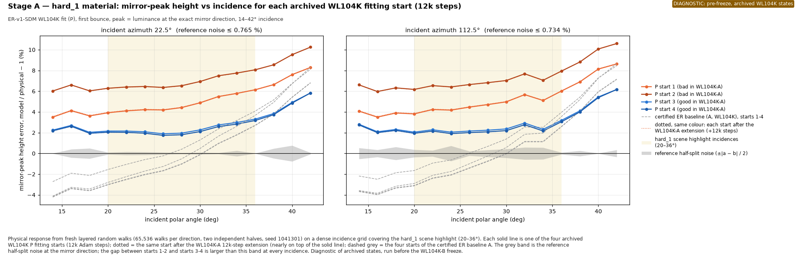
Stage A: hard_1 signed core / shoulder / tail error vs incidence per archived start.
Source: stageA.json:profiles.12k[*].core_0_3_signed / shoulder_3_12_signed / tail_12_30_signed
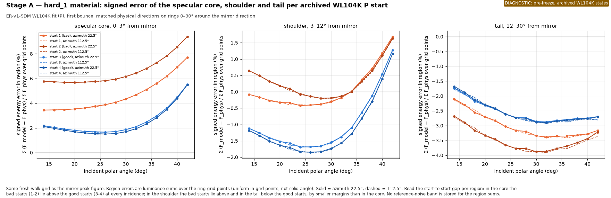
Stage A: training objective, peak and held-out el1 along the bad-to-good straight path; objective cost of a 5 % peak change.
Source: stageA.json:good_vs_bad[*].path; stageA.json:sensitivity[*].five_percent_peak_probe
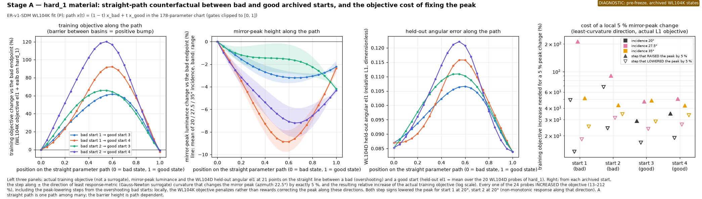
Stage A: grouped integrated-gradient attribution of the bad-vs-good peak difference (path dependent, non-identifiable).
Source: stageA.json:good_vs_bad[*].integrated_gradient_by_group_rel; stageA.json:groups
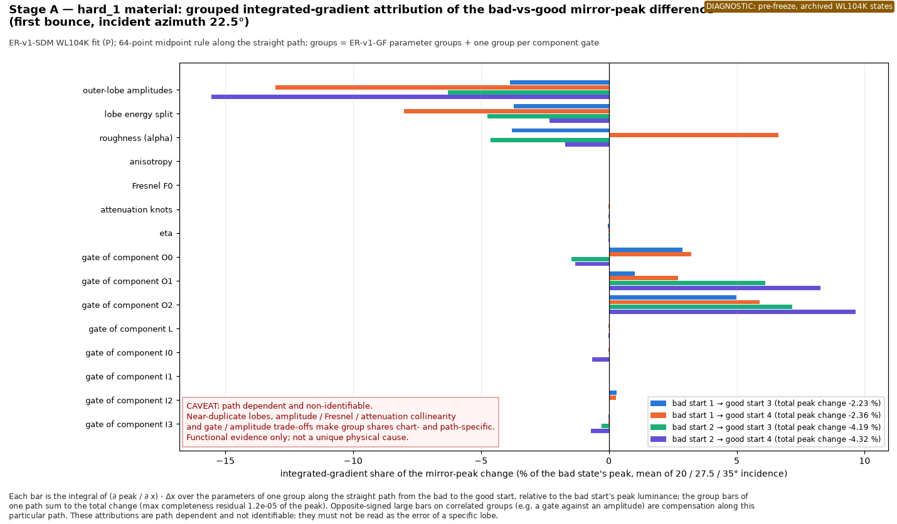
Training-objective curves per arm (O0 Adam, O1 L-BFGS, D, E2) for hard_1, block_186, hard_53, iid_0; 8 starts each.
Source: fits/<arm>/fit.json:history_steps|history_evaluations, history_objective, final_terms.objective
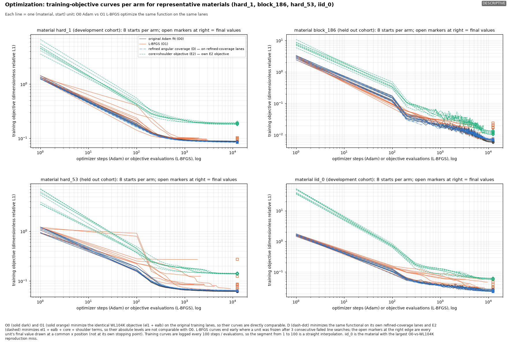
O1 early termination per material, evaluations used, O1 vs O0 final objective per unit, stationarity per arm.
Source: fits/O1/fit.json:terminated_early, evaluations_per_unit, final_terms; fits/O0/fit.json:final_terms; test.json:optimization
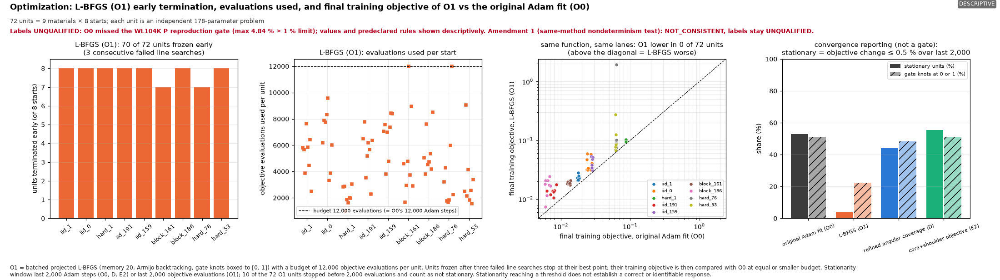
O0 reproduction of WL104K P per unit vs the predeclared 1e-4 / 1e-2 limits, and the Amendment 1 same-method rerun distributions (reason for UNQUALIFIED labels).
Source: test.json:O0_reproduction; amendment1/result.json:components, target_O0_vs_archive, pooled_reruns, verdict
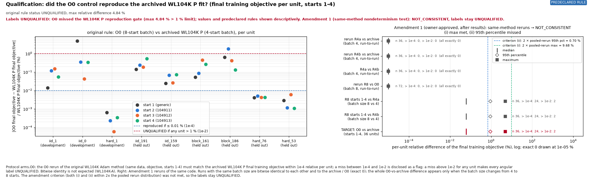
Independent test: pooled e_prof and el1 per start per arm (dots) with medians.
Source: test_eval/arrays.npz:test__<arm>__e_prof, test__<arm>__el1
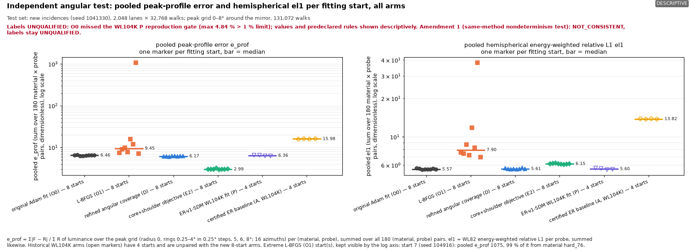
Independent test: e_prof, instability, el1, shoulder, tail, grazing changes vs O0 with bootstrap CI and predeclared thresholds; labels.
Source: test.json:contrasts_vs_O0.<arm>.<metric>.all; test.json:broad_preserved_facts; test.json:labels
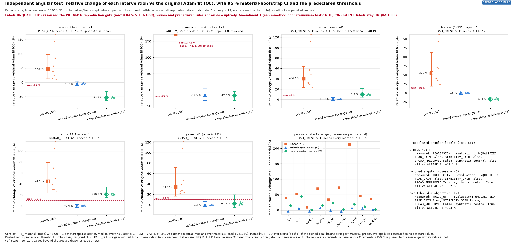
Independent test: e_prof per material, dots per start, all arms.
Source: test_eval/arrays.npz:test__<arm>__e_prof
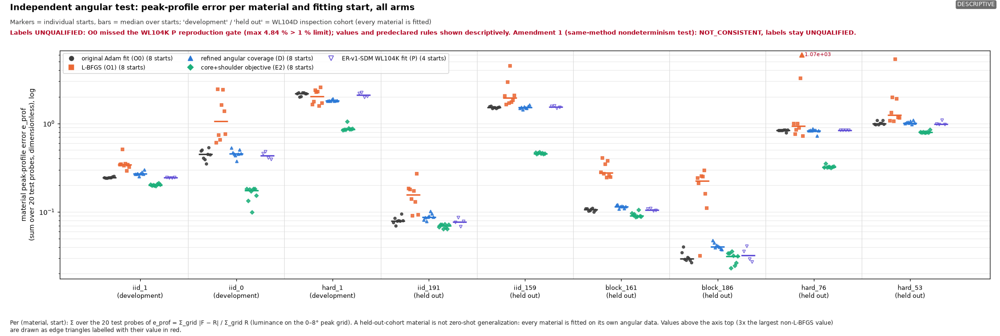
Independent test: core / shoulder / tail / grazing errors per arm, per start.
Source: test_eval/arrays.npz:test__<arm>__core_l1|shoulder_l1|tail_l1|el1_grazing
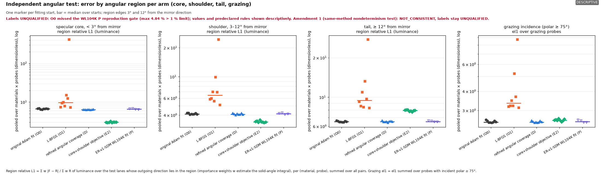
Independent test: signed peak-height error vs incidence per material, median over starts with per-start range (O0, E2, D).
Source: test_eval/arrays.npz:test__<arm>__s_h, s_h_a, s_h_b, polar_deg
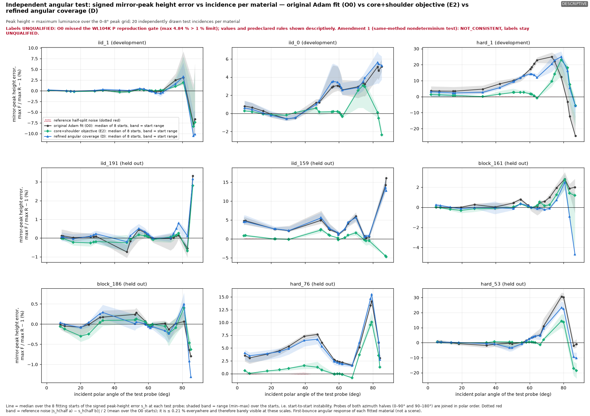
Independent test: across-start SD of peak height per material per arm.
Source: test_eval/arrays.npz:test__<arm>__s_h
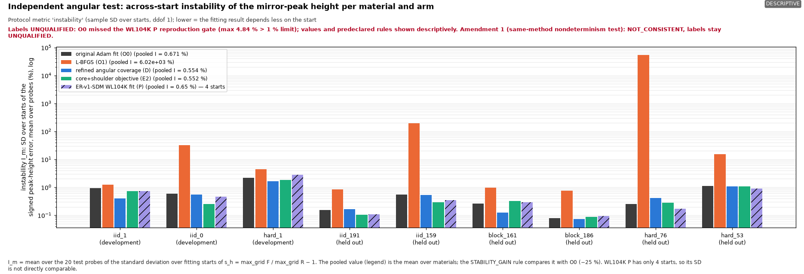
Dev-set eligibility of O1 / D / E2 for the combination F.
Source: dev.json:stage_F.eligibility
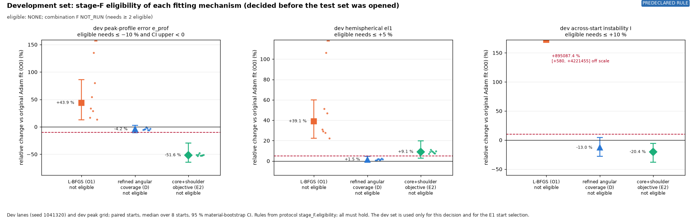
Independent test: ring residual 0–8° per arm for hard_1, hard_53 and block_186, per start and median.
Source: test_eval/arrays.npz:profile__<arm>, profile_radius_deg
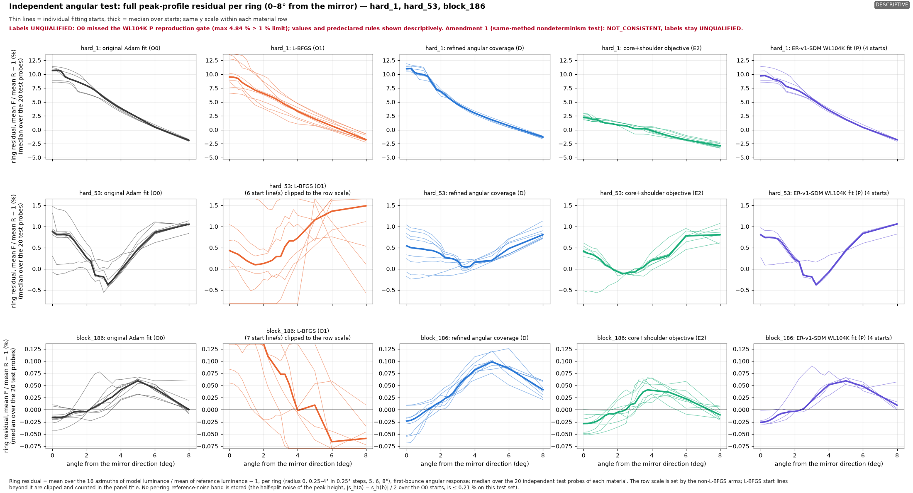
E1: per-material scatter of dev selection criterion vs test e_prof over 8 O0 starts; selected start highlighted.
Source: dev.json:selection.S_dev.O0; test_eval/arrays.npz:test__O0__e_prof; test.json:selection_E1.per_arm.O0
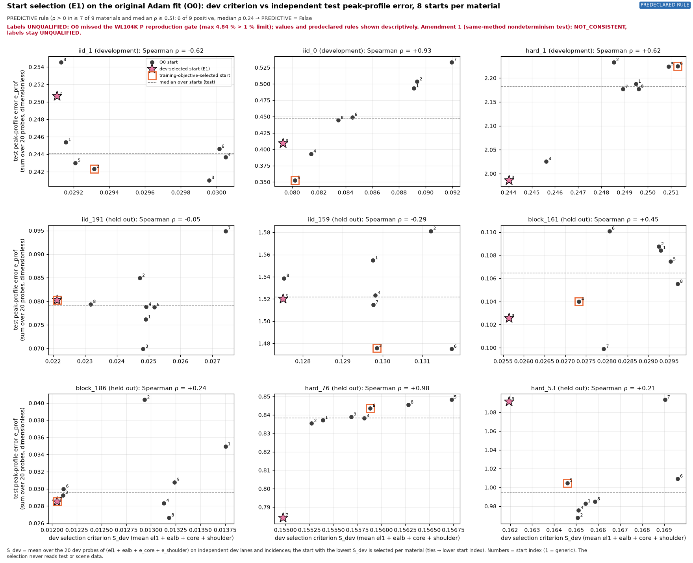
E1: pooled test e_prof / el1 of selected vs median vs training-selected starts per arm, with rule lines.
Source: test.json:selection_E1.per_arm
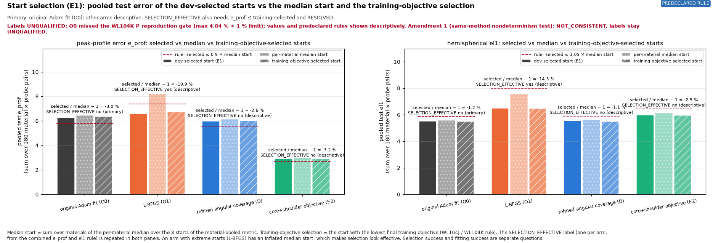
Synthetic controls: truth-referenced e_prof, el1, training objective and E1 selection per synthetic arm, with pass rules.
Source: test.json:synthetic.pooled; test.json:synthetic.controls; test_eval/arrays.npz:synthetic__S_O0__e_prof
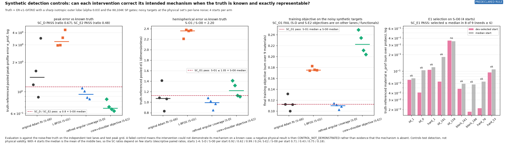
Scenes: X vs O0 relative change of objects TOTAL and E1 stable RMS with jackknife CI and per-start values.
Source: scenes/test83_iid_1_L2/analysis104kb.json:contrasts, contrasts_descriptive_E1, contrasts_descriptive_hist; scenes/test83_hard_1_L1/analysis104kb.json:contrasts, contrasts_descriptive_E1, contrasts_descriptive_hist; scenes/test83_iid_159_L2/analysis104kb.json:contrasts, contrasts_descriptive_E1, contrasts_descriptive_hist; scenes/test83_hard_53_L2/analysis104kb.json:contrasts, contrasts_descriptive_E1, contrasts_descriptive_hist; scenes/test83_block_186_L2/analysis104kb.json:contrasts, contrasts_descriptive_E1, contrasts_descriptive_hist
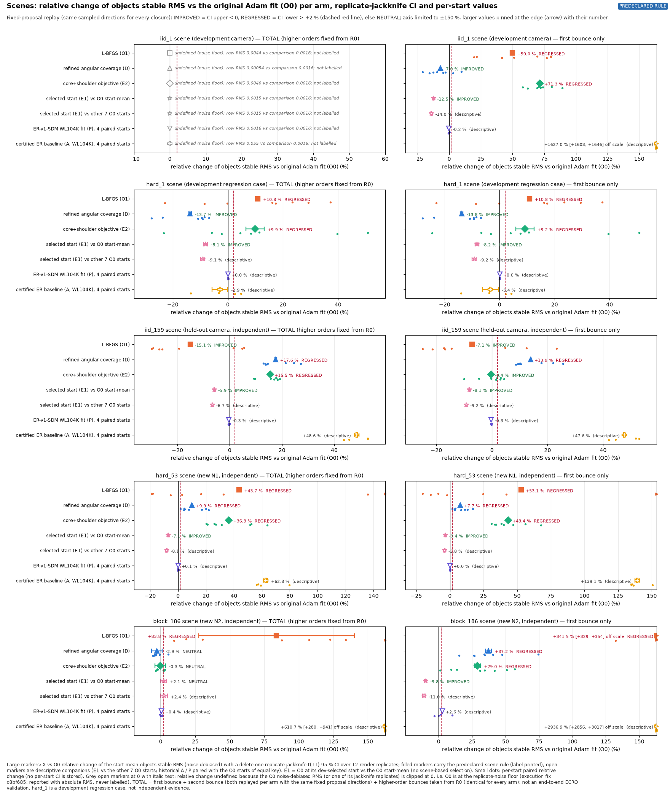
Scenes: absolute objects stable RMS per start and arm with start-mean and across-start SD.
Source: scenes/test83_iid_1_L2/analysis104kb.json:arm_summary, selected_E1; scenes/test83_hard_1_L1/analysis104kb.json:arm_summary, selected_E1; scenes/test83_iid_159_L2/analysis104kb.json:arm_summary, selected_E1; scenes/test83_hard_53_L2/analysis104kb.json:arm_summary, selected_E1; scenes/test83_block_186_L2/analysis104kb.json:arm_summary, selected_E1
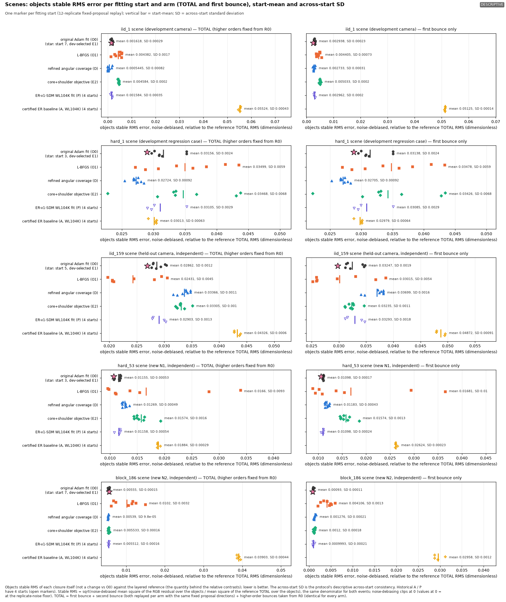
iid_1 scene (development camera): start-mean images (reference, O0, E2, D, O1, E1 start) and shared-scale absolute error maps.
Source: scenes/test83_iid_1_L2/maps.npz
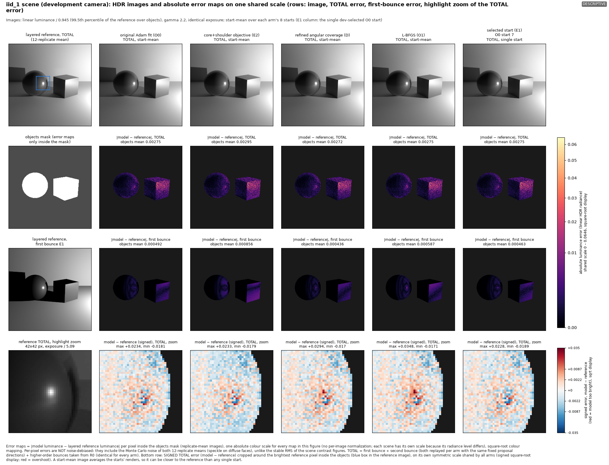
hard_1 scene (development regression case): start-mean images (reference, O0, E2, D, O1, E1 start) and shared-scale absolute error maps.
Source: scenes/test83_hard_1_L1/maps.npz
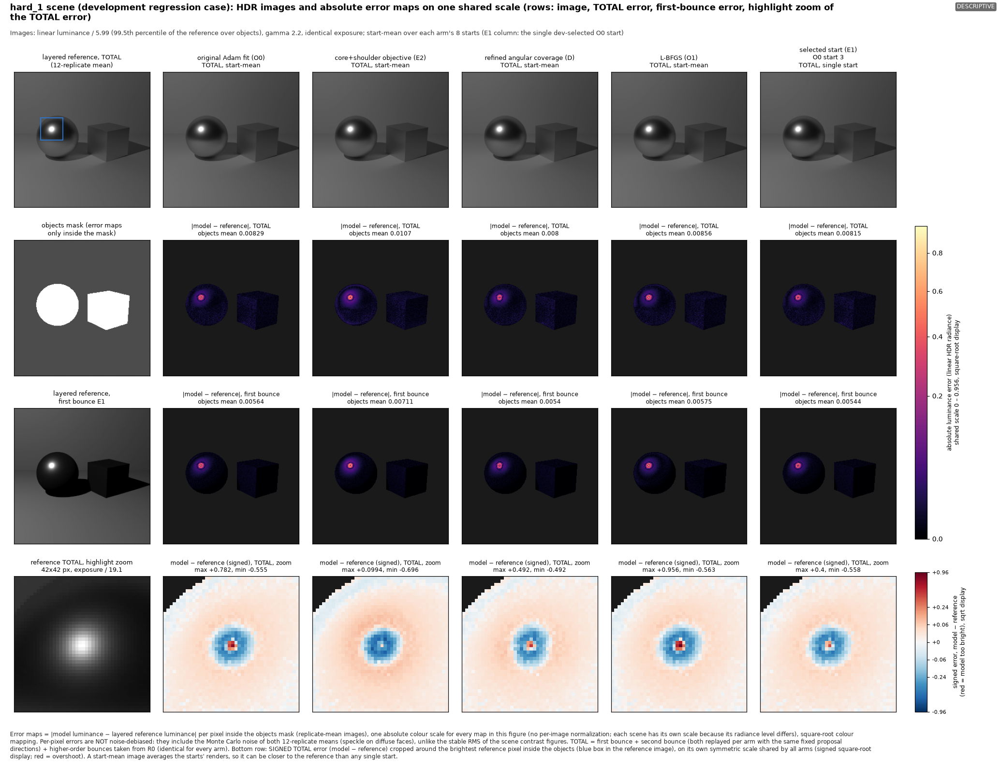
iid_159 scene (held-out camera, independent): start-mean images (reference, O0, E2, D, O1, E1 start) and shared-scale absolute error maps.
Source: scenes/test83_iid_159_L2/maps.npz
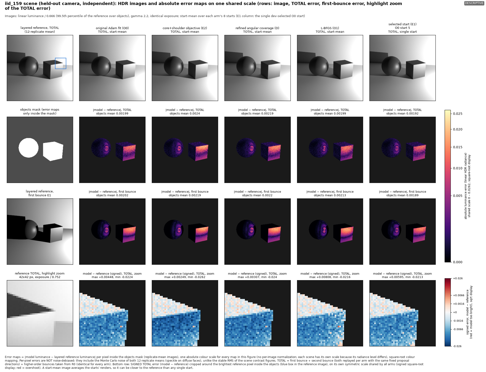
hard_53 scene (new N1, independent): start-mean images (reference, O0, E2, D, O1, E1 start) and shared-scale absolute error maps.
Source: scenes/test83_hard_53_L2/maps.npz
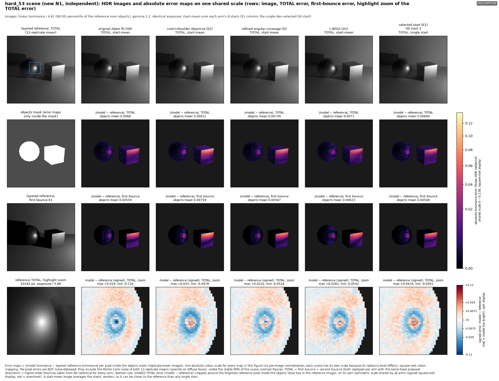
block_186 scene (new N2, independent): start-mean images (reference, O0, E2, D, O1, E1 start) and shared-scale absolute error maps.
Source: scenes/test83_block_186_L2/maps.npz
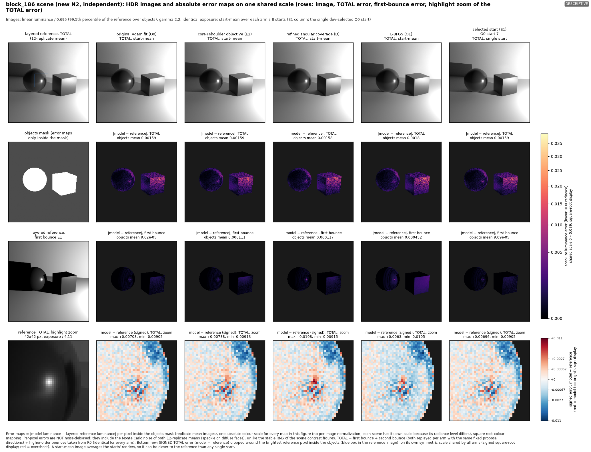
Scenes: concentration of the squared-error change in peak pixels.
Source: scenes/test83_iid_1_L2/analysis104kb.json:peak_pixels; scenes/test83_hard_1_L1/analysis104kb.json:peak_pixels; scenes/test83_iid_159_L2/analysis104kb.json:peak_pixels; scenes/test83_hard_53_L2/analysis104kb.json:peak_pixels; scenes/test83_block_186_L2/analysis104kb.json:peak_pixels
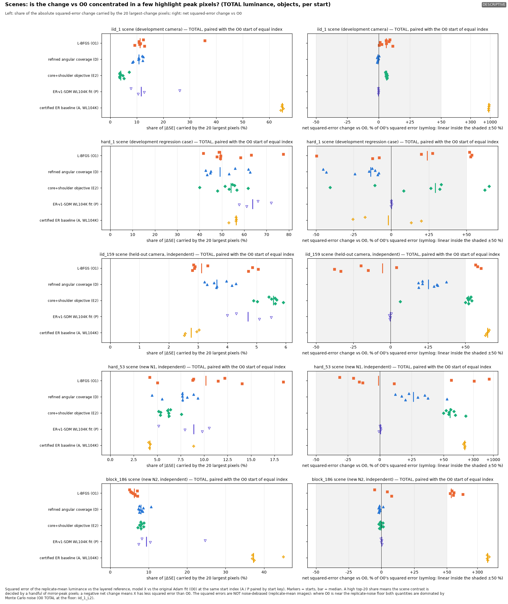
Secondary WL104D reference vs primary test: relative changes vs O0 (e_prof, e_h, el1, instability).
Source: test.json:secondary_historical.contrasts_vs_O0; test.json:contrasts_vs_O0
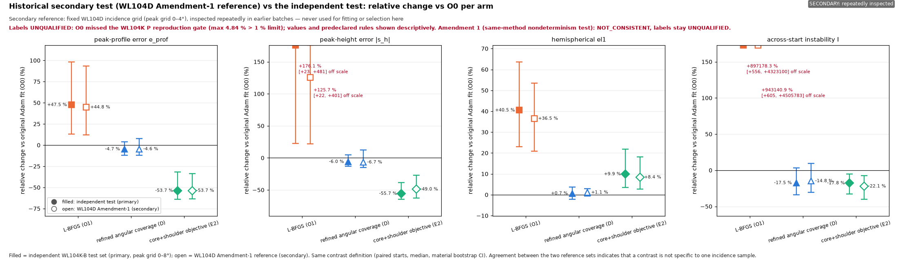